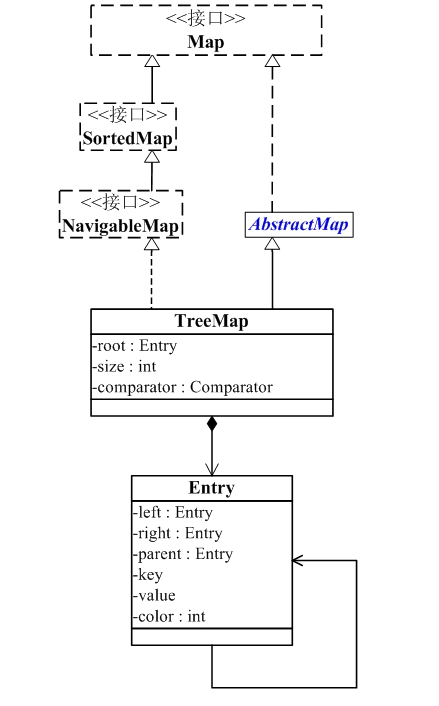

前言
接触JAVA一年有余,对于JAVA基础从未认真的进行过总结,导致一些基础问题云里雾里,故开篇对JAVA基础做一次总结,本篇为第十三篇,JAVA集合中的TreeMap;
正篇
TreeMap的概念
TreeMap是一个有序的key-value集合,它是通过红黑树实现的,TreeMap继承于AbstractMap,所以它是一个Map,即一个key-value集合,实现了NavigableMap接口,意味着它支持一系列的导航方法,比如返回有序的key集合,实现了Cloneable接口,意味着它能被克隆,实现了java.io.Serializable接口.
PS: TreeMao基于红黑树(Red-Black tree)实现,该映射根据其键的自然顺序进行排序,或者根据创建映射时提供的Comparator进行排序,具体取决于使用的构造方法,TreeMap是非同步的,它的iterator方法返回的迭代器是fail-fastl;
请注意，此实现不同步。 如果多个线程同时访问映射，并且至少一个线程在结构上修改映射，则必须在外部进行同步。 （结构修改是添加或删除一个或多个映射的任何操作;仅改变与现有密钥相关联的值不是结构修改。）这通常通过对自然封装映射的一些对象进行同步来实现。 如果没有这样的对象存在，应该使用Collections.synchronizedSortedMap方法“包装”地图。 这最好在创建时完成，以防止意外的不同步访问地图：
TreeMap的构造函数
1 | // 默认构造函数。使用该构造函数，TreeMap中的元素按照自然排序进行排列。 |
TreeMap的继承关系
1 | public class TreeMap<K,V> |

从图中可以看出：
(01) TreeMap实现继承于AbstractMap，并且实现了NavigableMap接口。
(02) TreeMap的本质是R-B Tree(红黑树)，它包含几个重要的成员变量： root, size, comparator。
root 是红黑数的根节点。它是Entry类型，Entry是红黑数的节点，它包含了红黑数的6个基本组成成分：key(键)、value(值)、left(左孩子)、right(右孩子)、parent(父节点)、color(颜色)。Entry节点根据key进行排序，Entry节点包含的内容为value。
红黑数排序时，根据Entry中的key进行排序；Entry中的key比较大小是根据比较器comparator来进行判断的。
size是红黑数中节点的个数。
TreeMap实现SortedMap接口，能够把它保存的记录根据键排序，默认是按键值的升序排序，也可以指定排序的比较器，当用Iterator遍历TreeMap时，得到的记录是排过序的。如果使用排序的映射，建议使用TreeMap。在使用TreeMap时，key必须实现Comparable接口或者在构造TreeMap传入自定义的Comparator，否则会在运行时抛出java.lang.ClassCastException类型的异常。